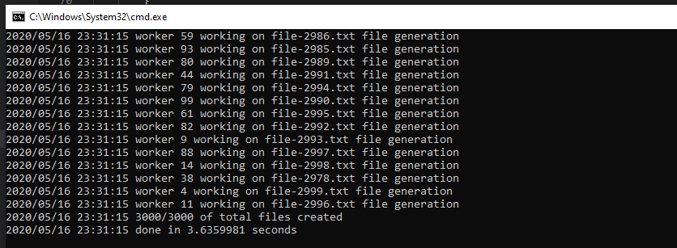
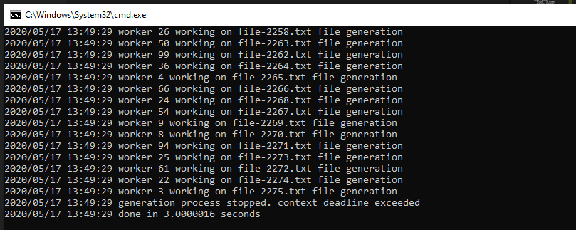

A.64. Concurrency Pattern: Context Cancellation Pipeline
Pada bab ini kita akan belajar tentang salah satu concurrency pattern di Go, yaitu cancellation. Cancellation merupakan mekanisme untuk menggagalkan secara paksa proses konkuren yang sedang berjalan, entah itu karena ada timeout, ada error, atau ada faktor lain.
Disini kita akan gunakan salah satu API milik Go yang tersedia untuk cancellation, yaitu context.Context.
Context digunakan untuk mendefinisikan tipe context yang didalamnya ada beberapa hal yaitu: informasi deadlines, signal cancellation, dan data untuk keperluan komunikasi antar API atau antar proses.
A.64.1. Skenario Praktek
Kita akan modifikasi file program 1-generate-dummy-files-concurrently.go yang pada chapter sebelumnya sudah dibuat. Pada program tersebut akan kita tambahkan mekanisme cancellation ketika ada timeout.
Jadi kurang lebih akan ada dua result:
- Proses sukses, karena execution time dibawah timeout.
- Proses digagalkan secara paksa ditengah jalan, karena running time sudah melebihi batas timeout.
A.64.2. Program Generate Dummy File Concurrently
Ok langsung saja, pertama yang perlu dipersiapkan adalah tulis dulu kode program versi concurrent tanpa cancellation. Bisa langsung copy-paste, atau tulis dari awal dengan mengikut tutorial ini secara keseluruhan. Untuk penjelasan detail program versi sekuensial silakan merujuk ke chapter sebelumnya saja, disini kita tulis langsung agar bisa cepat dimulai bagian program konkuren.
• Import Packages dan Definisi Variabel
package main
import (
"fmt"
"io/ioutil"
"log"
"math/rand"
"os"
"path/filepath"
"sync"
"time"
)
const totalFile = 3000
const contentLength = 5000
var tempPath = filepath.Join(os.Getenv("TEMP"), "chapter-A.61-pipeline-cancellation-context")
• Definisi struct FileInfo
type FileInfo struct {
Index int
FileName string
WorkerIndex int
Err error
}
• Fungsi init() dan main()
func init() {
rand.Seed(time.Now().UnixNano())
}
func main() {
log.Println("start")
start := time.Now()
generateFiles()
duration := time.Since(start)
log.Println("done in", duration.Seconds(), "seconds")
}
• Fungsi randomString()
func randomString(length int) string {
letters := []rune("abcdefghijklmnopqrstuvwxyzABCDEFGHIJKLMNOPQRSTUVWXYZ")
b := make([]rune, length)
for i := range b {
b[i] = letters[rand.Intn(len(letters))]
}
return string(b)
}
• Fungsi generateFiles()
func generateFiles() {
os.RemoveAll(tempPath)
os.MkdirAll(tempPath, os.ModePerm)
// pipeline 1: job distribution
chanFileIndex := generateFileIndexes()
// pipeline 2: the main logic (creating files)
createFilesWorker := 100
chanFileResult := createFiles(chanFileIndex, createFilesWorker)
// track and print output
counterTotal := 0
counterSuccess := 0
for fileResult := range chanFileResult {
if fileResult.Err != nil {
log.Printf("error creating file %s. stack trace: %s", fileResult.FileName, fileResult.Err)
} else {
counterSuccess++
}
counterTotal++
}
log.Printf("%d/%d of total files created", counterSuccess, counterTotal)
}
• Fungsi generateFileIndexes()
func generateFileIndexes() <-chan FileInfo {
chanOut := make(chan FileInfo)
go func() {
for i := 0; i < totalFile; i++ {
chanOut <- FileInfo{
Index: i,
FileName: fmt.Sprintf("file-%d.txt", i),
}
}
close(chanOut)
}()
return chanOut
}
• Fungsi createFiles()
func createFiles(chanIn <-chan FileInfo, numberOfWorkers int) <-chan FileInfo {
chanOut := make(chan FileInfo)
wg := new(sync.WaitGroup)
wg.Add(numberOfWorkers)
go func() {
for workerIndex := 0; workerIndex < numberOfWorkers; workerIndex++ {
go func(workerIndex int) {
for job := range chanIn {
filePath := filepath.Join(tempPath, job.FileName)
content := randomString(contentLength)
err := ioutil.WriteFile(filePath, []byte(content), os.ModePerm)
log.Println("worker", workerIndex, "working on", job.FileName, "file generation")
chanOut <- FileInfo{
FileName: job.FileName,
WorkerIndex: workerIndex,
Err: err,
}
}
wg.Done()
}(workerIndex)
}
}()
go func() {
wg.Wait()
close(chanOut)
}()
return chanOut
}
Hasil eksekusi program:

A.64.3. Program Generate Dummy File Concurrently dan Mekanisme Cancellation
Ok, sekarang kita akan refactor kode tersebut, kita tambahkan mekanisme cancellation menggunakan context.Context API. Silakan duplikasi file program, lalu ikuti petunjuk berikut.
• Import package context
Tambahkan package context dalam block import packages.
import (
"context"
// ...
)
• Tambahkan definisi konstanta timeout
Disini saya tentukan timeout adalah 3 menit. Nantinya kita akan modifikasi angka timeout untuk keperluan testing.
const timeoutDuration = 3 * time.Second
• Penerapan context di fungsi main()
Pada fungsi main, lakukan sedikit perubahan. Yang sebelumnya ada statement berikut:
generateFiles()
Ubah menjadi berikut:
ctx, cancel := context.WithTimeout(context.Background(), timeoutDuration)
defer cancel()
generateFilesWithContext(ctx)
Fungsi generateFilesWithContext() merupakan fungsi yang sama persis dengan generateFiles() (yang tentunya akan kita buat). Perbedaannya adalah hanya pada fungsi baru ini ada satu argument baru yaitu data context.Context.
Ini merupakan salah satu idiomatic Go untuk cara penulisan fungsi yang cancellable. Umumnya akan ada fungsi tanpa context dan fungsi yang ada context-nya. Contohnya seperti berikut:
generateFiles()
generateFilesWithContext(ctx)
Dimisalkan lagi jika argument context adalah wajib pada sebuah fungsi, maka cukup gunakan 1 fungsi saja, yang ada WithContext()-nya dihapus, tapi satu fungsi yang ada ditambahkan context. Contohnya:
generateFiles(ctx)
Pada contoh ini kita akan siapkan dua fungsi, yang ada context-nya dan yang tidak.
Ok lanjut ke pembahasan. Fungsi context.WithTimeout digunakan untuk menambahkan timeout pada sebuah context. Parameter pertama fungsi ini adalah objek context juga. Pada contoh di atas, karena sebelumnya belum ada objek context, maka kita buat objek context baru lewat context.Background().
Cara pembuatan object context sendiri sebenarnya ada 3:
- Menggunakan fungsi
context.Background(). Fungsi tersebut menghasilkan objek context yang data di dalamnya adalah kosong dan tidak memiliki deadline. Context ini biasanya digunakan untuk inisialisasi object context baru yang nanti akan di-chain dengan fungsicontext.With.... - Menggunakan fungsi
context.TODO(). Fungsi ini menghasilkan objek context baru seperticontext.Background(). Context buatan fungsi TODO ini biasanya digunakan dalam situasi ketika belum jelas nantinya harus menggunakan jenis context apa (apakah dengan timeout, apakah dengan cancel). Menggunakan fungsi
context.With.... Fungsi ini sebenarnya bukan digunakan untuk inisialisasi objek konteks baru, tapi digunakan untuk menambahkan informasi tertentu pada copied context yang disisipkan di parameter pertama pemanggilan fungsi. Ada 3 buah fungsicontext.With...yang bisa digunakan, yaitu:- Fungsi
context.WithCancel(ctx) (ctx, cancel). Fungsi ini digunakan untuk menambahkan fasilitas cancellable pada context yang disisipkan sebagai parameter pertama pemanggilan fungsi. Lewat nilai balik kedua, yaitucancelyang tipenyacontext.CancelFunc, kita bisa secara paksa meng-cancel context ini. - Fungsi
context.WithDeadline(ctx, time.Time) (ctx, cancel). Fungsi ini juga menambahkan fitur cancellable pada context, tapi selain itu juga menambahkan informasi deadline yang dimana jika waktu sekarang sudah melebihi deadline yang sudah ditentukan maka context otomatis di-cancel secara paksa. - Fungsi
context.WithTimeout(ctx, time.Duration) (ctx, cancel). Fungsi ini sama seperticontext.WithDeadline(), bedanya pada parameter kedua argument bertipe durasi (bukan objektime.Time).
- Fungsi
Kesamaan dari ketiga fungsi context.With... adalah sama-sama menambahkan fasilitas cancellable yang bisa dieksekusi lewat nilai balik kedua fungsi tersebut (yang tipenya context.CancelFunc).
Jadi pada contoh yang kita tulis di atas, kurang lebih yang akan dilakukan adalah:
- Kira buat object context baru lewat
context.Background(). - Objek context tersebut ditambahkan fasilitas cancellable didalamnya, dan juga auto cancel ketika timeout menggunakan
context.WithTimeout(), dengan durasi timeout adalahtimeoutDuration. - Fungsi
generateFilesWithContext()dipanggil dengan disisipkan object context. - Callback
context.CancelFuncdipanggil secara deferred. Ini merupakan idiomatic Go dalam penerapan context. Meskipun context sudah punya timeout atau deadline dan kita tidak perlu meng-cancel context secara manual, sangat dianjurkan untuk tetap memanggil callbackcancel()tersebut secara deferred.
• Modifikasi fungsi generateFiles()
Isi dari fungsi generateFiles() kita ubah menjadi pemanggilan fungsi generateFilesWithContext() dengan parameter context kosong.
func generateFiles() {
generateFilesWithContext(context.Background())
}
Pada fungsi generateFilesWithContext() sendiri, isinya adalah isi generateFiles() sebelumnya tapi ditambahkan beberapa hal. Silakan tulis dulu kode berikut.
func generateFilesWithContext(ctx context.Context) {
os.RemoveAll(tempPath)
os.MkdirAll(tempPath, os.ModePerm)
done := make(chan int)
go func() {
// pipeline 1: job distribution
chanFileIndex := generateFileIndexes(ctx)
// pipeline 2: the main logic (creating files)
createFilesWorker := 100
chanFileResult := createFiles(ctx, chanFileIndex, createFilesWorker)
// track and print output
counterSuccess := 0
for fileResult := range chanFileResult {
if fileResult.Err != nil {
log.Printf("error creating file %s. stack trace: %s", fileResult.FileName, fileResult.Err)
} else {
counterSuccess++
}
}
// notify that the process is complete
done <- counterSuccess
}()
select {
case <-ctx.Done():
log.Printf("generation process stopped. %s", ctx.Err())
case counterSuccess := <-done:
log.Printf("%d/%d of total files created", counterSuccess, totalFile)
}
}
Penambahan yang dimaksud adalah, statement pipelines dibungus dengan sebuah goroutine IIFE, yang di akhir fungsi kita kirim informasi jumlah file yang berhasil di-generate (counterSuccess) ke sebuah channel bernama done.
Channel done ini kita gunakan sebagai indikator bahwa proses pipeline sudah selesai secara keseluruhan.
Selain goroutine, di akhir fungsi generateFilesWithContext() sendiri ditambahkan channel selection dengan isi dua buah cases.
Case pertama adalah ketika channel done pada context ctx menerima data. Cara penggunaannya seperti ini <-ctx.Done(). Ketika channel done milik context ini menerima data, berarti context telah di-cancel secara paksa. Cancel-nya bisa karena memang context melebihi timeout yang sudah ditentukan, atau di-cancel secara eksplisit lewat pemanggilan callback context.CancelFunc. Untuk mengetahui alasan cancel bisa dengan cara mengakses method error milik contex, yaitu: ctx.Err().
Jadi pada contoh di atas, ketika context timeout atau di-cancel secara eksplisit (via callback cancel), maka case pertama akan terpenuhi dan message ditampilkan.
Untuk case kedua akan terpenuhi ketika proses pipeline sudah selesai secara keseluruhan. Bisa dilihat di akhir goroutine, disitu channel done dikirimi informasi counterSuccess. Ketika ini terjadi maka kondisi case kedua terpenuhi, lalu ditampilkan informasi file yang sudah sukses dibuat.
Nah jadi lewat seleksi kondisi 2 case di atas, kita bisa dengan mudah mengidentifikasi apakah proses selesai sepenuhnya, ataukah cancelled ditengah jalan karena timeout ataupun karena di-cancel secara eksplisit.
Selain beberapa hal yang sudah saya sampaikan, ada minor changes lainnya, yaitu pada pemanggilan fungsi generateFileIndexes() dan createFiles() ditambahkan argument context.
• Penambahan context pada fungsi generateFiles()
Kenapa ini perlu? karena meski eksekusi fungsi generateFilesWithContext() otomatis di stop ketika cancelled, proses di dalamnya akan tetap berjalan jika tidak di-handle dengan baik cancellation-nya.
Maka dari itu kita perlu memodifikasi, memastikan bahwa cancellation juga diberlakukan dalam level sub proses.
Silakan tulis kode berikut pada fungsi generateFileIndexes().
func generateFileIndexes(ctx context.Context) <-chan FileInfo {
chanOut := make(chan FileInfo)
go func() {
for i := 0; i < totalFile; i++ {
select {
case <-ctx.Done():
break
default:
chanOut <- FileInfo{
Index: i,
FileName: fmt.Sprintf("file-%d.txt", i),
}
}
}
close(chanOut)
}()
return chanOut
}
Dibanding sebelumnya, perbedaannya adalah ada channel selection. Jadi di bagian pengiriman jobs, ketika sebelum semua jobs dikirim tapi ada notif untuk cancel maka kita akan skip pengiriman remainin jobs secara paksa.
- Jika ada notif cancel paksa, maka case pertama akan terpenuhi, dan perulangan di-
break. - Selebihnya, pengiriman jobs akan berlangsung seperti normalnya.
• Penambahan context pada fungsi createFiles()
Hal yang sama (cancel di level sub prosees) juga perlu diterapkan pada createFiles(), karena jika tidak, maka proses pembuatan file akan tetap berjalan sesuai dengan jumlah jobs yang dikirim meskipun sudah di-cancel secara paksa.
Sebenarnya penambahan cancellation pada fungsi generateFiles() sudah cukup, karena ketika cancelled maka sisa jobs tidak akan dikirim. Tapi pada contoh ini penulis ingin ketika cancelled, maka tidak hanya pengiriman jobs tapi eksekusi jobs juga di-stop secara paksa (meski mungkin masih ada sebagian jobs yang masih dalam antrian).
Silakan tulis kode berikut.
func createFiles(ctx context.Context, chanIn <-chan FileInfo, numberOfWorkers int) <-chan FileInfo {
chanOut := make(chan FileInfo)
wg := new(sync.WaitGroup)
wg.Add(numberOfWorkers)
go func() {
for workerIndex := 0; workerIndex < numberOfWorkers; workerIndex++ {
go func(workerIndex int) {
for job := range chanIn {
select {
case <-ctx.Done():
break
default:
filePath := filepath.Join(tempPath, job.FileName)
content := randomString(contentLength)
err := ioutil.WriteFile(filePath, []byte(content), os.ModePerm)
log.Println("worker", workerIndex, "working on", job.FileName, "file generation")
chanOut <- FileInfo{
FileName: job.FileName,
WorkerIndex: workerIndex,
Err: err,
}
}
}
wg.Done()
}(workerIndex)
}
}()
go func() {
wg.Wait()
close(chanOut)
}()
return chanOut
}
Penambahannya juga sama seperti fungsi-fungsi yang lain, yaitu dengan menambahkan channel selection. Ketika ada notifikasi cancel maka perulangan jobs di break. Selebihnya maka harus berjalan seperti normalnya.
A.64.4. Test Eksekusi Program
Jalankan program ke-dua, lihat hasilnya. Karena sebelumnya kita sudah set durasi timeout adalah 3 detik, maka jika proses belum selesai sebelum durasi tersebut akan di-cancel secara paksa.

Cukup mudah bukan?
Silakan coba modifikasi durasinya dengan nilai lebih besar, misalnya 15 detik, lalu coba jalankan.
Bisa dilihat, di gambar di atas, jika program selesai sebelum 15 detik maka aman.
A.64.5. Cancel Context Secara Paksa (Tanpa Timeout)
Coba lakukan modifikasi sedikit pada bagian pemanggilan generate files, dari:
ctx, cancel := context.WithTimeout(context.Background(), timeoutDuration)
defer cancel()
generateFilesWithContext(ctx)
Ke:
ctx, cancel := context.WithCancel(context.Background())
defer cancel()
time.AfterFunc(timeoutDuration, cancel)
generateFilesWithContext(ctx)
Lalu coba jalankan, maka hasilnya adalah tetap sama. Jika eksekusi program melebihi context maka akan di-cancel secara paksa, selebihnya aman.
Perbedannya ada pada penerapan cancellation-nya. Pada contoh ini kita tidak menggunakan timeout, melainkan menggunakan explicit cancel dengan mensimulasi timeout menggunakan time.AfterFunc().